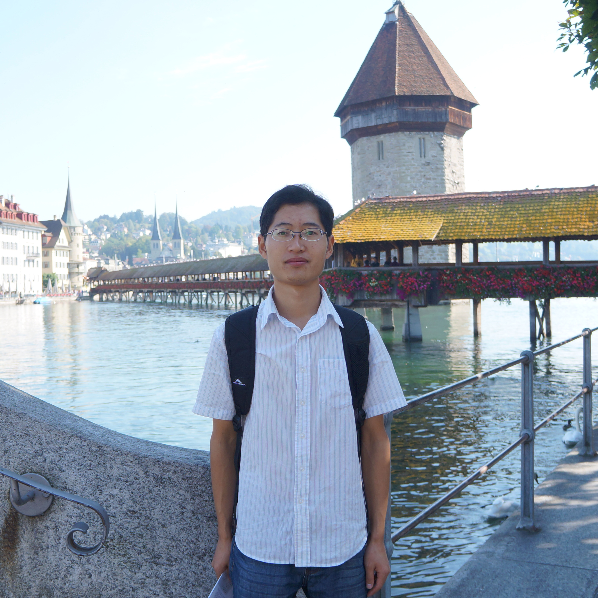

|  | Kai-Fu Yang (杨开富) |
Biography
I received my Ph.D. degree in biomedical engineering from the University of Electronic Science and Technology of China (UESTC), China, in 2016, under the supervision of Prof. Yongjie Li. I am currently an associate research professor with the MOE Key Lab for Neuroinformation, School of Life Science and Technology, UESTC. I was a visiting scholar from August, 2019 to August, 2020 in Computer Vision Lab, Department of Information Technology and Electrical Engineering, ETH Zurich.
Research Interest
My researches aim to explore the underlying computational theory of visual cognition, and to build brain-inspired methods for computer vision applications. Specifically, I focus on the following research topics:- Adaptive Visual Enhancement in Camera Pipeline
- Cognitive-driven Visual Understanding for Trraffic Scenes Object Detection, Semantic Segmentation, etc.
Image Enhancement, Color Constancy, etc.